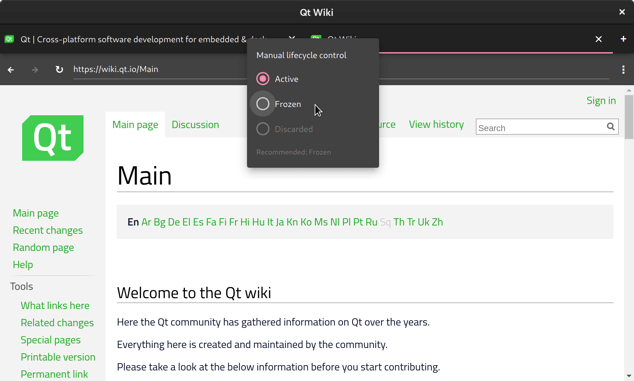
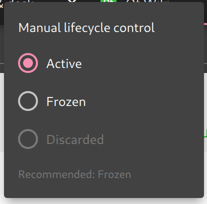
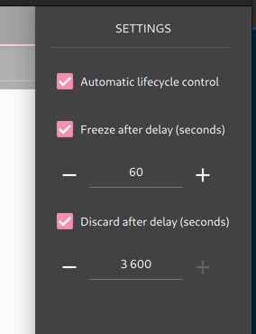

WebEngine Lifecycle Example
Freezes and discards background tabs to reduce CPU and memory usage.

WebEngine Lifecycle Example demonstrates how the lifecycleState and recommendedState properties of the WebEngineView can be used to reduce the CPU and memory usage of background tabs in a tabbed browser.
For an overview of the lifecycle feature, see Page Lifecycle API.
Running the Example
To run the example from Qt Creator, open the Welcome mode and select the example from Examples. For more information, visit Building and Running an Example.
UI Elements of the Example
The example uses Qt Quick Controls 2 to implement a traditional tabbed browser in the Material Style (dark variant). The main application window (WebBrowser.qml) is divided into a header bar at the top and a main viewing area filling the rest of the window. The header contains the tab bar (WebTabBar.qml) with one button per tab (WebTabButton.qml). The main area consists of a stack of tabs (WebTabStack.qml and WebTab.qml). Each tab in turn has a tool bar at the top and a WebEngineView for displaying web pages. Finally, the main window also has a Drawer for changing settings. The drawer can be opened by clicking the "⋮" button on the tool bar.
Note: Note that WebTab.qml uses fromUserInput to handle incomplete URLs.
Lifecycle States in the Example
The example implements two ways of changing the lifecycle state: manual and automatic. The manual way uses the lifecycleState property directly to change the web view lifecycle state, while the automatic way is timer-based and also takes into account the recommendedState.
The tab titles in the tab bar are color coded with frozen tabs shown in blue and discarded in red.
Manual Lifecycle Control

Manual control is provided by context menus on the tab bar buttons (WebTabButton.qml). The menu has three radio buttons, one for each lifecycle state, with the current state checked. Some buttons may be disabled, either because they represent illegal state transitions (for example, a Discarded view cannot directly transition to the Frozen state), or because other preconditions are not fulfilled (for example, a visible view can only be in the Active state).
Automatic Lifecycle Control

Automatic control is implemented with a Timer in the WebTab component (WebTab.qml). The timer is started whenever the lifecycleState of the web view does not match it's recommendedState. Once the timer fires, the view's lifecycle state is set to the recommended state.
The time delay is used to avoid changing the lifecycle state too quickly when the user is switching between tabs. The freezing and discarding delays can be changed in the settings drawer accessed through the "⋮" button on the tool bar.
This is a rather simple algorithm for automatic lifecycle control, however more sophisticated algorithms could also be conceived and implemented on the basis of the lifecycleState property. For example, the Chromium browser experimentally uses a pretrained deep neural network to predict the next tab activation time by the user, essentially ranking tabs based on how interesting they are to the user. Implementing such an algorithm is left as an exercise to the reader for now.